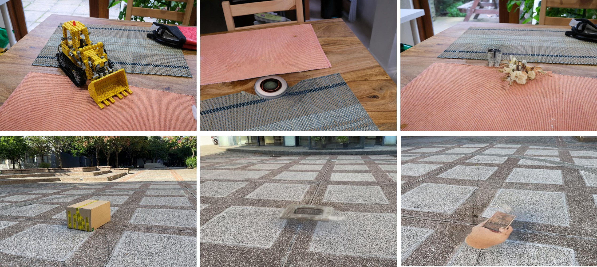
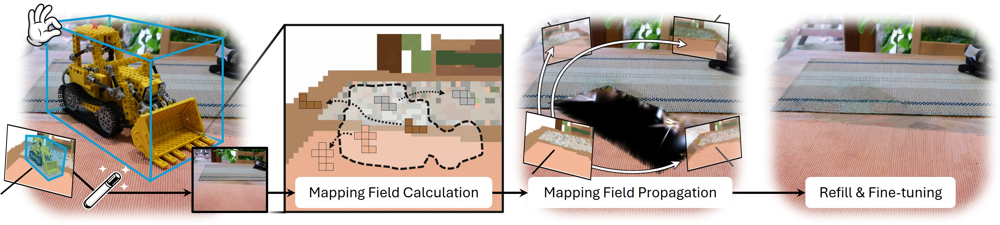
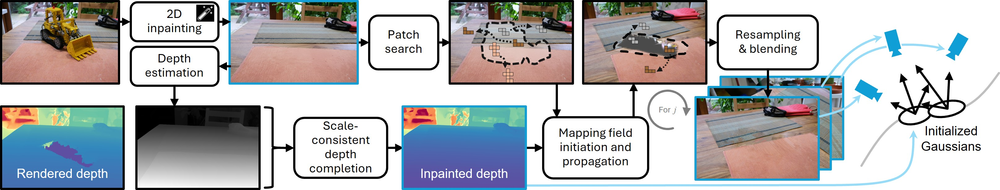
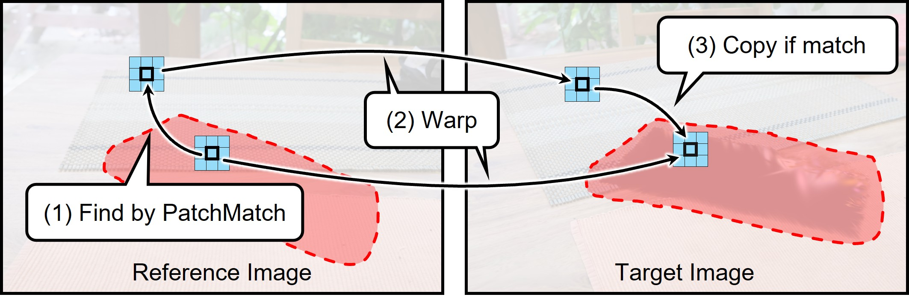
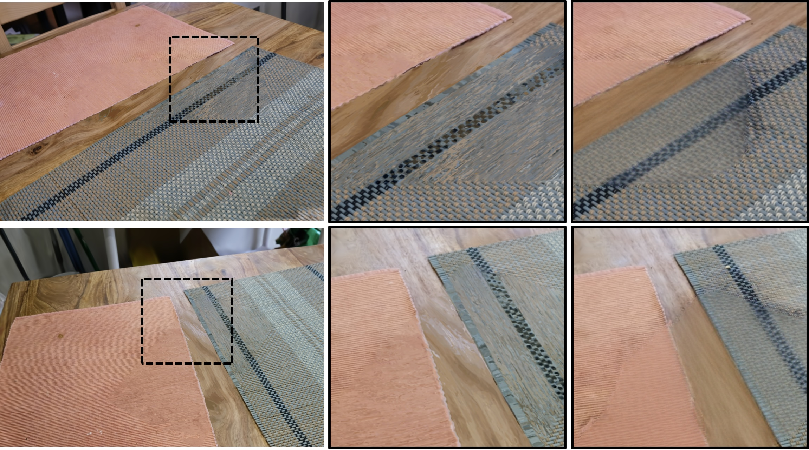
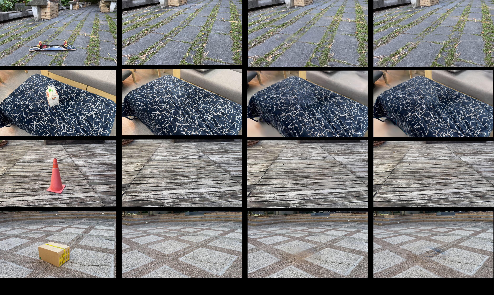

3D-GIMP 来自斯图加特大学 VISUS(可视化与交互系统研究所),作者 Xuening Tian、Dieter Schmalstieg、Shohei Mori。Schmalstieg 组长期做 AR/VR 与 Diminished Reality(消隐现实),论文结尾也明确把工作定位为"Dininished Reality 的使能技术"。任务本身是 3D 高斯场景中的物体移除(object removal),但论文真正的贡献是一个范式层面的取舍。
建立全局几何基础,在遮挡区域保证结构完整性与高保真纹理合成,克服传统 2D 修复在 3D 空间中的局限。
把尺度模糊的单目深度先验与 3DGS 的不完整场景深度融合,形式化为梯度域泊松问题求解。
patch 式修复在质量上与当下扩散方法有竞争力,同时在计算效率与可扩展性上显著更优。
把 patch-matching 结果与生成式结果混合,可有效缓解幻觉伪影、提升跨视图一致性。
给定一组训练视图 $\mathcal{I}=\{I_{j}\}_{j=0}^{J}$ 重建的 3DGS 场景,目标是移除某个物体后,在 3D 区域 $\mathcal{R}\subset\mathbb{R}^{3}$ 内合成与周围"空间与光度都一致"的新内容。这里有两个必须同时满足的约束:
现有做法是逐帧用扩散模型修复被挖洞的训练视图。但扩散采样是随机的:同一个洞,第 10 帧可能补出砖墙、第 40 帧补出木栅栏。论文称之为 hallucination drift(幻觉漂移)。3DGS 优化面对互相矛盾的监督信号,无法收敛到一个自洽的 3D 形状,结果就是渲染时出现"漂浮的、模糊的"区域。

对动辄数百视图的场景逐帧跑重度扩散模型,耗时可达数小时(如 SPInNeRF 3.0h),对交互式场景编辑不现实。
扩散的条件强度必须在"高性能"与"高修复保真度"之间折中:条件太强则篡改已观测内容,太弱则在未观测区产生幻觉。
| 路线 | 代表 | 核心缺陷 | 3D-GIMP 的立场 |
|---|---|---|---|
| NeRF 时代物体移除 | SPIn-NeRF | 受底层 2D 修复模型生成质量限制 | 几何一致性由 3D 定义保证,不依赖 2D 模型质量 |
| 逐视图扩散修复 | AuraFusion360、InFusion | 未对齐的高斯初始化 + 不一致的 2D→3D 像素更新 → 结构伪影 | 用 Mapping Field 作为更强的结构先验 |
| 视频扩散修复 | GEN3C | 时序维度代价高,相机条件化有限 | 2DGS 变体在 IMFine 上 PSNR 高 1.87 dB |
| 经典 exemplar 修复 | Criminisi et al. 2003 | 仅从洞口边界取像素,匹配结果次优 | 用大模型先验替换随机初始化 |
整条流水线是"一次生成 + 一次几何补全 + 一次对应场传播 + 一次重优化"。论文用一张图概括了数据流。


| # | 阶段 | 输入 | 输出 | 关键机制 |
|---|---|---|---|---|
| 1 | 3D ROI 与一致掩码 | 已重建 3DGS 场景 + 用户指定的 3D bbox $\mathcal{R}$ | 所有视图一致的 2D 目标区域 $T$ | 投影 + guard band($s=1.2$)+ 基元足迹做差 |
| 2 | 参考视图生成式修复 | 参考视图 $I_0$ 与其掩码 $T_0$ | 修复后的 $I_0$ (外观先验) | 现成商品化图像编辑模型(单次调用) |
| 3 | 尺度一致深度补全 | 不完整 3DGS 深度 $d_g$ + 单目深度 $d_m$ | 尺度一致的补全深度 $d$ | 梯度域泊松求解 + Dirichlet 边界 |
| 4 | 映射场构建与跨视图传播 | $I_0$、$T_0$、补全深度 | 全部修复视图 $\{\mathcal{I}_t^{*}\}$ | 3D-aware PatchMatch + 可见性软约束 + 泊松融合 |
| 5 | 高斯重建 | 修复后的视图集 | 无物体的 3DGS | 深度反投影新建高斯 + SH 预计算 + 30k 迭代优化 |
这一节是全文对本库工程最有启发的一段。论文原文:
换言之:只要 mask 是逐帧、独立预测出来的,边界就一定会抖。而 3DGS 的优化要求监督信号在几何上自洽,抖动的边界会持续注入矛盾梯度。
论文把 ROI 定义为一个 3D 包围盒 $\mathcal{R}\in\mathbb{R}^{6}$:
论文给出三种用户指定 3D bbox 的方式,第二种和第三种都直接引用了语义分割:
论文先说清了最直觉的做法及其失败原因。把修复后的参考视图用深度直接 warp 到其他视图,是维持多视图一致的直观策略,但:
两个失效源:① 单目深度的全局尺度歧义;② 视角相关效应(反射、高光)导致像素颜色随视角变化。前者用泊松补全解决,后者用映射场解决(下一节)。
论文指出:单目深度估计模型输出的视差局部一致但全局尺度不一致(local consistency, global scale inconsistency)。而 3DGS 光栅化出的深度是尺度正确但不完整的(物体移除后留下空洞)。两者互补,于是把它形式化为一个梯度域问题。
离散拉普拉斯算子(对像素 $\mathbf{p}\in T$ 及其四连通邻域 $N(\mathbf{p})$):
离散泊松方程:
引导散度由单目深度 $d_m$ 提供,并用尺度参数 $s_f$ 对齐:
Dirichlet 边界条件:在 $\partial T$ 上与 3DGS 光栅化的视差 $d_g$ 无缝拼接:
论文在附录 A.4 用 IMFine 的 "rocks" 场景测试了 $s_f\in\{0.01, 0.05, 0.10, 0.20, 0.50\}$,实证取 $s_f=0.1$,理由是"在所有测试场景中质量最一致"。论文同时观察到:泊松求解器即使在复杂结构细节下也能重建高保真底层几何。$s_f$ 的作用是"自适应地增强或压缩从单目深度图导出的梯度"。
论文借用 Barnes et al. 2009 的 PatchMatch 概念,把映射场(mapping field,又称 nearest neighbor field)定义为:
它对目标区域 $T$ 中每个像素 $\mathbf{p}$ 给出一个偏移,指向源区域 $I\setminus T$ 中最相似的对应点。求解映射场是一个全局最小化问题:
其中代价 $\mathcal{L}$ 是外观相似度与空间匹配连贯性的组合。论文特别指出加速手段:传播步骤(propagation)+ 随机搜索(random search),这正是经典 PatchMatch 的两件套。
在修复后的参考视图 $I_0$ 上,对每个 patch 中心 $\mathbf{p}\in T_0$,搜索相似 patch 中心 $\mathbf{q}\in I_0\setminus T_0$,使得:
论文的核心论证是:"Local surface patches typically exhibit high photometric correlation in neighboring views." 因此匹配对 $(\mathbf{p},\mathbf{q})$ 可以用参考深度图 $D$ 重投影到其他视图:
其中 $\tilde{\mathbf{p}}=[u,v,1]^{\top}$,$\pi([x,y,z]^{\top})=[x/z,\ y/z]^{\top}$ 是透视除法。注意这里的 $D$ 就是上一节的泊松补全深度——两个阶段在此耦合。
理想情况是"映射场只构建一次,然后重投影到所有视图复用"。但论文承认这太刚性:源像素在邻近视图中经常被遮挡或落到画外。于是引入可见性分数:
即"该像素在所有视图中保持可见的比例",作为软约束并入匹配代价:
最优映射场:
"To handle many-to-one projections and occlusions in the forward mapping, we implement a dense patch-based splatting and pixel-wise depth test." —— 只保留离目标相机中心最近的 fragment,以正确解决遮挡。

论文给出 Algorithm 1(Cross-View Patch Inpainting)。对每个目标视图 $\mathcal{I}_t$ 及其中的每个像素 $\mathbf{p}_0\in T_0$:
for each target view I_t in {I_t}:
for each pixel p_0 in T_0:
p_t <- Warp(p_0, pi_0, pi_t) # 目标像素位置
q_0 <- p_0 + f(p_0) # 参考视图中的源像素
p_t^tgt <- Warp(q_0, pi_0, pi_t) # 源像素在目标视图中的位置
if p_t out of range or p_t^tgt out of range:
(p_t, p_t^tgt) <- ReTargeting(p_t, p_t^tgt, I_0, I_t)
C_cand <- PixelSampling(I_t, {p_t, p_t^tgt}) # 候选像素集
I_t^raw <- SortingAndBlending({p_t}, C_cand) # 排序 + 混合
I_t^* <- PoissonBlending(I_t, I_t^raw) # 泊松融合,消除接缝
UpdateCameraState(I_t, I_t^*)映射场建立后,输入视图通过从映射场采样与混合 patch 完成修复。论文随后:
消融实验中明确:新高斯经深度反投影初始化后,不完整区域的 2D 高斯基元再优化 30,000 次迭代。
新建高斯后,如果让它们从零开始学球谐系数会拖慢收敛。论文在附录 A.2 给出一个直接预计算视相关颜色的做法。
设残差 $r_{\omega}=c_{\omega}-c_{0}=\mathbf{h}\mathbf{y}_{\omega}$(其中 $c_0$ 是参考视图观测颜色,$\mathbf{y}_{\omega}$ 是方向 $\omega$ 的 SH 基),求解加权最小二乘系统:
权重按视角偏离参考方向的幅度做高斯衰减:
| 项目 | 内容 |
|---|---|
| 数据集 | IMFine、360-USID、Mip-NeRF 360(均为 360° 无界场景) |
| IMFine 选取 | 20 场景中选 8 个:室内 bin / bucket / dabao / desk3,室外 detergent / sofa / msi / rocks;沿用前作做法用半分辨率评估 |
| 360-USID 规格 | 7 个无界场景,$960\times540$;每场景约 200 个含目标物体的视图 + 30 个纯背景 GT 视图 + 1 个参考视图 |
| 指标 | PSNR、LPIPS、FID、计算时间 |
| 指标口径 | PSNR 与 LPIPS 均只在物体掩码上计算 |
| 时间口径 | 只计修复耗材,不含 3DGS(重)优化 |
| 硬件 | 单卡 NVIDIA RTX 5090 |
IMFine 数据集
| 方法 | PSNR ↑ | LPIPS ↓ | FID ↓ | Time ↓ |
|---|---|---|---|---|
| SPInNeRF | 13.75 | 0.456 | 206.43 | 3.0h |
| NeRFiller | 17.45 | 0.411 | 71.21 | 53 mins |
| GScream | 12.22 | 0.677 | 237.08 | 21 mins |
| InFusion | 13.19 | 0.481 | 175.52 | 1 min |
| IMFine* | 19.67 | 0.268 | 149.52 | 1.0h |
| AuraFusion360 | 17.46 | 0.173 | 69.33 | 16 mins |
| Ours (3DGS) | 17.47 | 0.344 | 87.36 | 10 min |
| Ours (2DGS) | 19.09 | 0.248 | 53.11 | 6 mins |
360-USID 数据集
| 方法 | PSNR ↑ | LPIPS ↓ | FID ↓ | Time ↓ |
|---|---|---|---|---|
| AuraFusion360 | 16.22 | 0.445 | 61.03 | 32 mins |
| Ours (3DGS) | 15.24 | 0.461 | 83.06 | 8.8 mins |
| Ours (2DGS) | 15.02 | 0.387 | 57.38 | 6.8 mins |
| 方法 | PSNR ↑ | SSIM ↑ | LPIPS ↓ |
|---|---|---|---|
| GEN3C | 17.94 | 0.967 | 0.370 |
| Ours (2DGS) | 19.81 | 0.977 | 0.238 |
实验协议:从训练集随机选 5 个关键帧构建 3D cache(其中含 1 个修复帧作为 GT 参考),沿测试相机定义的新轨迹生成空间连续的视频帧。两者使用同一个参考帧以保证公平。注意:为公平起见,对 GEN3C 只统计物体掩码区域,排除了 ROI 周围生成的像素。


论文在 NVIDIA RTX 5090 上用 IMFine($1900\times1050$)做了跨分辨率定量分析:随分辨率提高,耗时显著增长,主要瓶颈是最后一步泊松融合的计算开销;但在所有尺度上本文方法都保持了更优的 PSNR 与 LPIPS,且仍比竞争框架更高效。受显存限制,对比方法只评估到 $1\times$ 尺度。
| Warping | Mapping Field | PSNR ↑ | LPIPS ↓ | FID ↓ |
|---|---|---|---|---|
| — | — | 17.48 | 0.571 | 122.47 |
| ✓ | — | 18.54 | 0.251 | 76.21 |
| ✓ | ✓ | 19.09 | 0.248 | 53.11 |
三种配置的准确定义(原文):
论文指出泊松求解器虽然有效,但容易产生过度平滑,尤其沿 Dirichlet 边界的不规则区域。$s_f$ 的作用是自适应增强/压缩单目深度的梯度。在 'rocks' 场景上对 $s_f\in\{0.01,0.05,0.10,0.20,0.50\}$ 做敏感性测试,实证取 0.1。
论文做了一个很有意思的"混合"实验:以本文的修复结果作为源图,再交给扩散模型 LeftRefill 做生成式精修,并保持与 AuraFusion360 完全相同的实验配置。
| 方法 | PSNR ↑ | LPIPS ↓ | FID ↓ |
|---|---|---|---|
| LeftRefill | 16.22 | 0.445 | 61.03 |
| Ours | 19.09 | 0.248 | 53.11 |
| Ours + LeftRefill | 19.17 | 0.227 | 69.99 |
本节回答一个具体问题:3D-GIMP 虽然做的是"物体移除",它的方法组件能怎么用到本库的人体/人脸三维重建与增强链路上?下面按"可直接借用 → 需要改造 → 仅作思路参考"三档给出评估。
现状痛点:本库用 SAM3 逐帧生成 person mask,再靠 ID 映射与 track 去重保持时序一致。但逐帧独立分割天然存在边界抖动,去重逻辑是在"事后打补丁"。3D-GIMP 明确批评了这条路线("relying on 2D masks without knowing the shape of the corresponding 3D object is inherently prone to multi-view inconsistency")。
可借用做法:把 mask 的定义权从 2D 逐帧上移到 3D。论文给了三种途径,其中"选择语义高斯簇"与"语义分割后生长 3D bbox"都天然兼容 SAM3 —— 即用 SAM3 得到语义,但最终用3D 包围盒/track 级 3D 几何来定义边界,再投影回各视图。这样:
guard band 参数:可直接沿用 $s=1.2$ 作为起点,但注意论文承认这是经验值,没有自适应机制。
现状痛点:单目/VGGT 类前馈模型给出的深度是尺度模糊的;而 COLMAP / 3DGS 光栅化给出的深度是尺度正确但有空洞的。本库在稀疏视角或人体自遮挡区域,深度不完整是常态。
可借用做法:直接复用这套形式化 —— 用 3DGS 光栅化深度作 Dirichlet 边界(提供绝对尺度锚点),用单目深度提供内部梯度,解一个泊松方程。
起始值取 $s_f=0.1$。这在3DMM/MHR 头模与 3DGS 的深度对齐、以及AvatarGaussian 初始化阶段都有直接价值 —— 深度尺度对齐是后续所有几何对准的地基。
现状痛点:AvatarGaussian / BodyGaussian 初始化后,新基元的球谐系数需要从零学起,拖慢收敛。
可借用做法:当基元只有单一方向的观测(典型场景:从参考帧反投影出来的高斯)时,用式 11/12 的加权最小二乘直接把视相关颜色解出来,权重按视角偏离参考方向做高斯衰减。这是一个几十行就能实现的加速技巧,且与具体的人体建模方法无关,属于通用组件。
现状痛点:本库用 HYPIR(扩散先验图像复原)做增强。如果逐帧独立增强,同样会遇到 3D-GIMP 所批判的 drift 问题 —— 每帧独立采样会让人脸细节(皱纹、毛孔、发丝、identity 特征)在帧间漂移,回灌 3DGS 后表现为面部纹理"闪烁"或"糊"。这是与 hallucination drift 同源的问题,只是发生在"增强"而非"补洞"语义下。
可借用范式:把 HYPIR 的调用从"每帧一次"降为"关键参考帧一次",得到高质量人脸外观先验;然后通过3D 对应关系把这份高频纹理传播到其他帧。
本库规划的微动消除方案是"固定所有帧的表情系数"。3D-GIMP 提供了一个正交的思考角度:与其让所有帧都不表达表情,不如让唯一一帧承担表情,其余帧靠几何传播保持一致。理论上这既保留了表情信息,又消除了帧间抖动。
⚠️【推测】 3D-GIMP 的传播是"纹理搬运",不涉及表情系数/形变场的传播,论文也完全没有做人脸或人体实验。这条思路缺少直接证据支持,列在此处仅作为方案对比的候选,不宜作为决策依据。
Table 2 的 Ours + LeftRefill 是最好的反面教材:PSNR 与 LPIPS 都变好了(19.09→19.17,0.248→0.227),但 FID 从 53.11 恶化到 69.99。对本库的直接启示:评估增强效果时不要只看 PSNR/SSIM/LPIPS,必须同时看分布类指标。人脸增强尤其如此 —— 局部感知质量提升,很可能伴随 identity 分布偏移。
| 组件 | 迁移难度 | 预期收益 | 验证成本 | 建议顺序 |
|---|---|---|---|---|
| 3D bbox 替代逐帧 mask | 低 | 高(消除 track 抖动) | 低 | 1 |
| 泊松深度补全 | 低(独立模块) | 中高 | 低 | 2 |
| SH 加权最小二乘预计算 | 低 | 中(加速收敛) | 低 | 3 |
| 单帧增强 + 几何传播 | 中高 | 中高 | 高 | 4(先小实验) |
| 固定表情系数的替代思路 | 高 | 未知 | 高 | 暂缓 |
问题:实验设置里明确写 "To ensure fair comparison, we use the first ground truth frame from the testing set as the reference view"。也就是说,方法的效果建立在一个真实应用中拿不到的假设上 —— 你知道哪个视角是"最好的参考"(而且它有 ground truth)。
证据:论文在附录 A.3 做了参考相机敏感性测试(每场景 10 次独立运行、不同随机种子选参考相机,记录 PSNR/LPIPS 的均值与标准差),结果表明"部分场景对相机选择更敏感",并建议选择"光轴与移除高斯逆平均法线最佳对齐"的视图。这说明参考视图选择确实是个真问题。
改进建议:把附录里的启发式(法线对齐度 + 可见性分数 $v$ 的均值)整理成一个可自动执行的选择准则,并在主流程中默认启用,而不是留作附录建议。
问题:方法强依赖 2DGS 精确的深度/法线输出。换回原生 3DGS 后,360-USID 上 FID 从 57.38 恶化到 83.06,直接输给 AuraFusion360 的 61.03。
证据:Table 1 中 Ours (3DGS) vs Ours (2DGS) 的两组数字;论文实现章节也说明 "we implement our pipeline by extending 2DGS, which supports a more accurate geometry than the original 3DGS"。
改进建议:论文没有讨论"当底层只提供 3DGS 时如何补救"。一个方向是引入单目法线估计作为额外的几何正则,降低对 2DGS 的硬依赖。
作者原文:"Even with multiple iterations, this method can suffer from weak supervision caused by the lack of ground truth on all target views. Consequently, the method's generalizability is limited in scenes with significant occlusions."
作者给的解法方向:不要从重投影的映射场采样,而是直接把高斯基元拷贝进 ROI;但这要求更结构化的高斯表示(如稀疏体素网格体素化的高斯基元),以在 2D 外观匹配失效处提供空间先验。
评价:这是论文最有价值的自省 —— 它实际上承认了"2D 外观匹配"这条路的原理性上限:当像素在多数视图中不可见时,2D 匹配无从下手,必须靠 3D 结构化表示。对本库的 3DGS 拆分架构(head/body/scene 本身就是一种结构化表示)而言,这是可探索的方向。
问题:① PSNR/LPIPS 只在物体掩码上计算,不含 ROI 周边,掩盖了边界融合质量;② 时间只计修复、不含 3DGS 重优化,"6 分钟"容易被误读为端到端时间;③ 全部实验都是静态场景物体移除,没有任何人脸/人体/非刚性目标。
对本库的含义:第 ③ 点尤其重要 —— 论文的核心前提"邻近视图中局部表面块具有高光度相关性"在非朗伯、高光、次表面散射的人脸区域会显著弱化。迁移前必须自证前提成立。
问题:⚠️【待核实】 Table 2(IMFine)中 LeftRefill 行的 16.22 / 0.445 / 61.03 与 Table 1 中 360-USID 的 AuraFusion360 行完全一致。两表数据集不同,数值完全相同不合常理。
建议:引用 Table 2 任何数字前先回原文核对;若确为笔误,向作者反馈(论文 2026-07-22 发布,可能已有 v2)。
问题:论文仅提供 arXiv abs 与 HTML 全文(含附录),没有 GitHub 仓库、没有项目主页。复现只能从头实现。
影响:好在方法的核心组件(PatchMatch、泊松深度融合、depth-based backprojection)都是经典且有成熟开源实现的,自研门槛不算高;但 $s=1.2$、$s_f=0.1$、$\lambda_s=0.001$ 这些关键超参没有代码佐证,迁移时需要自己重新标定。
问题:参考视图的修复依赖"现成模型",实现章节写明是 Nano Banana Pro with Gemini 2.5(Google DeepMind)。这意味着方法引入了对闭源商业图像编辑 API的依赖,无法完全离线复现,且版本迭代会导致行为漂移。
顺带一提的引用不一致:⚠️【待核实】 正文写的是 "Gemini 2.5",而参考文献条目写的是 "Nano banana pro: gemini 3 pro image generation"。两处措辞不一致,引用该事实时需注明。
积极面:这恰恰揭示了一个重要工程事实 —— 生成先验可以被完全外置。对本库而言,这意味着不必自己训练/微调生成模型,HYPIR 这类已有模型同样可以充当"单帧先验"的角色。
| 改进方向 | 类型 | 优先级 | 所需证据 |
|---|---|---|---|
| 参考视图自动选择准则 | 方法 | 高 | 附录 A.3 灵敏度分析的启发式 |
| 开源代码 / 完整超参 | 工程 | 高 | 目前完全缺失 |
| 降低 2DGS 硬依赖 | 方法 | 中 | Table 1 的 3DGS/2DGS 差距 |
| 强遮挡下的 3D 结构化表示 | 方法 | 中 | 作者自承局限 + 体素网格方案 |
| 掩码区域外的边界质量评估 | 评估 | 中 | 当前口径只算 object mask |
| Table 2 数值核对 | 数据 | 低 | 与 Table 1 疑似重号 |
3D-GIMP 解决的不是"如何生成更好的纹理",而是"如何把生成模型的使用次数压到最低,同时不损失多视图一致性"。这是一个系统层面的问法,而论文的价值主要在这个问法本身,而非某个具体模块的性能。
| 维度 | 逐帧扩散(AuraFusion360 等) | 视频扩散(GEN3C) | 生成式增强(ArtiFixer) | 3D-GIMP |
|---|---|---|---|---|
| 生成调用次数 | 每视图一次 | 按序列 | 按批次(数百帧) | 1 次 |
| 一致性来源 | 事后 mask 精修 | 时序建模 | 3D 条件化 | 几何对应传播 |
| 主要弱点 | hallucination drift | 计算成本高 | 需重训大模型 | 强依赖参考视图与精确几何 |
| 能否离线复现 | 部分 | 是 | 是(权重开源) | 否(依赖闭源 API + 无代码) |